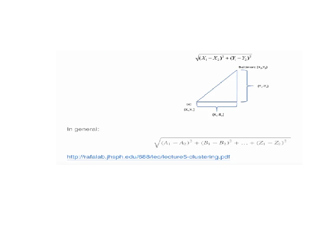
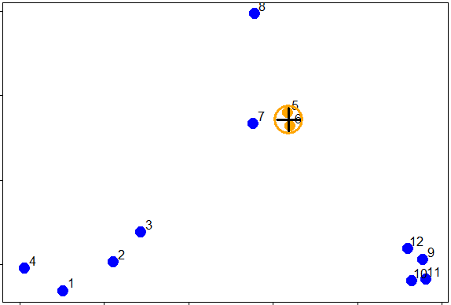
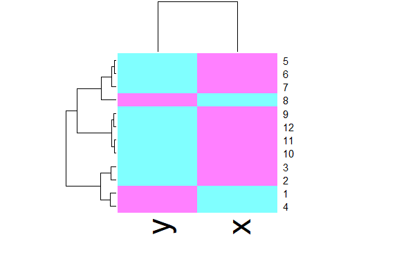
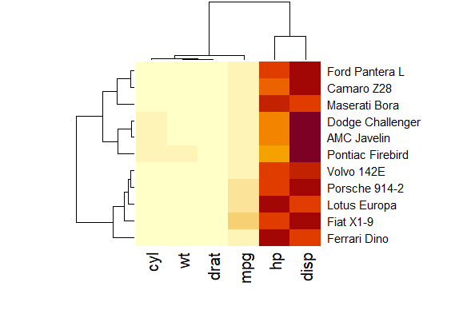

Hierarchical Clustering
R version 4.0.0 (2020-04-24) -- "Arbor Day"
Copyright (C) 2020 The R Foundation for Statistical Computing
Platform: x86_64-w64-mingw32/x64 (64-bit)
R is free software and comes with ABSOLUTELY NO WARRANTY.
You are welcome to redistribute it under certain conditions.
Type 'license()' or 'licence()' for distribution details.
Natural language support but running in an English locale
R is a collaborative project with many contributors.
Type 'contributors()' for more information and
'citation()' on how to cite R or R packages in publications.
Type 'demo()' for some demos, 'help()' for on-line help, or
'help.start()' for an HTML browser interface to help.
Type 'q()' to quit R.
setwd("C:/images")
library(swirl)
| Hi! Type swirl() when you are ready to begin.
swirl()
| Welcome to swirl! Please sign in. If you've been here before, use the same name as
| you did then. If you are new, call yourself something unique.
What shall I call you? Krishnakanth Allika
| Please choose a course, or type 0 to exit swirl.
1: Exploratory Data Analysis
2: Take me to the swirl course repository!
Selection: 1
| Please choose a lesson, or type 0 to return to course menu.
1: Principles of Analytic Graphs 2: Exploratory Graphs
3: Graphics Devices in R 4: Plotting Systems
5: Base Plotting System 6: Lattice Plotting System
7: Working with Colors 8: GGPlot2 Part1
9: GGPlot2 Part2 10: GGPlot2 Extras
11: Hierarchical Clustering 12: K Means Clustering
13: Dimension Reduction 14: Clustering Example
15: CaseStudySelection: 11
| Attempting to load lesson dependencies...
| Package ‘ggplot2’ loaded correctly!
| This lesson requires the ‘fields’ package. Would you like me to install it for you
| now?
1: Yes
2: No
Selection: 1
| Trying to install package ‘fields’ now...
WARNING: Rtools is required to build R packages but is not currently installed. Please download and install the appropriate version of Rtools before proceeding:
https://cran.rstudio.com/bin/windows/Rtools/
also installing the dependencies ‘dotCall64’, ‘spam’, ‘maps’
package ‘dotCall64’ successfully unpacked and MD5 sums checked
package ‘spam’ successfully unpacked and MD5 sums checked
package ‘maps’ successfully unpacked and MD5 sums checked
package ‘fields’ successfully unpacked and MD5 sums checked
| Package ‘fields’ loaded correctly!
| Package ‘jpeg’ loaded correctly!
| Package ‘datasets’ loaded correctly!
| | 0%
| Hierarchical_Clustering. (Slides for this and other Data Science courses may be
| found at github https://github.com/DataScienceSpecialization/courses/. If you care
| to use them, they must be downloaded as a zip file and viewed locally. This lesson
| corresponds to 04_ExploratoryAnalysis/hierarchicalClustering.)
...
|= | 2%
| In this lesson we'll learn about hierarchical clustering, a simple way of quickly
| examining and displaying multi-dimensional data. This technique is usually most
| useful in the early stages of analysis when you're trying to get an understanding of
| the data, e.g., finding some pattern or relationship between different factors or
| variables. As the name suggests hierarchical clustering creates a hierarchy of
| clusters.
...
|== | 3%
| Clustering organizes data points that are close into groups. So obvious questions
| are "How do we define close?", "How do we group things?", and "How do we interpret
| the grouping?" Cluster analysis is a very important topic in data analysis.
...
|==== | 5%
| To give you an idea of what we're talking about, consider these random points we
| generated. We'll use them to demonstrate hierarchical clustering in this lesson.
| We'll do this in several steps, but first we have to clarify our terms and concepts.

...
|===== | 6%
| Hierarchical clustering is an agglomerative, or bottom-up, approach. From Wikipedia
| (http://en.wikipedia.org/wiki/Hierarchical_clustering), we learn that in this
| method, "each observation starts in its own cluster, and pairs of clusters are
| merged as one moves up the hierarchy." This means that we'll find the closest two
| points and put them together in one cluster, then find the next closest pair in the
| updated picture, and so forth. We'll repeat this process until we reach a reasonable
| stopping place.
...
|====== | 8%
| Note the word "reasonable". There's a lot of flexibility in this field and how you
| perform your analysis depends on your problem. Again, Wikipedia tells us, "one can
| decide to stop clustering either when the clusters are too far apart to be merged
| (distance criterion) or when there is a sufficiently small number of clusters
| (number criterion)."
...
|======= | 10%
| First, how do we define close? This is the most important step and there are several
| possibilities depending on the questions you're trying to answer and the data you
| have. Distance or similarity are usually the metrics used.
...
|========= | 11%
| In the given plot which pair points would you first cluster? Use distance as the
| metric.
1: 5 and 6
2: 1 and 4
3: 10 and 12
4: 7 and 8
Selection: 1
| Perseverance, that's the answer.
|========== | 13%
| It's pretty obvious that out of the 4 choices, the pair 5 and 6 were the closest
| together. However, there are several ways to measure distance or similarity.
| Euclidean distance and correlation similarity are continuous measures, while
| Manhattan distance is a binary measure. In this lesson we'll just briefly discuss
| the first and last of these. It's important that you use a measure of distance that
| fits your problem.
...
|=========== | 15%
| Euclidean distance is what you learned about in high school algebra. Given two
| points on a plane, (x1,y1) and (x2,y2), the Euclidean distance is the square root of
| the sums of the squares of the distances between the two x-coordinates (x1-x2) and
| the two y-coordinates (y1-y2). You probably recognize this as an application of the
| Pythagorean theorem which yields the length of the hypotenuse of a right triangle.

...
|============ | 16%
| It shouldn't be hard to believe that this generalizes to more than two dimensions as
| shown in the formula at the bottom of the picture shown here.
...
|============== | 18%
| Euclidean distance is distance "as the crow flies". Many applications, however,
| can't realistically use crow-flying distance. Cars, for instance, have to follow
| roads.
...
|=============== | 19%
| In this case, we can use Manhattan or city block distance (also known as a taxicab
| metric). This picture, copied from http://en.wikipedia.org/wiki/Taxicab_geometry,
| shows what this means.

...
|================ | 21%
| You want to travel from the point at the lower left to the one on the top right. The
| shortest distance is the Euclidean (the green line), but you're limited to the grid,
| so you have to follow a path similar to those shown in red, blue, or yellow. These
| all have the same length (12) which is the number of small gray segments covered by
| their paths.
...
|================= | 23%
| More formally, Manhattan distance is the sum of the absolute values of the distances
| between each coordinate, so the distance between the points (x1,y1) and (x2,y2) is
| |x1-x2|+|y1-y2|. As with Euclidean distance, this too generalizes to more than 2
| dimensions.
...
|=================== | 24%
| Now we'll go back to our random points. You might have noticed that these points
| don't really look randomly positioned, and in fact, they're not. They were actually
| generated as 3 distinct clusters. We've put the coordinates of these points in a
| data frame for you, called dataFrame.
...
|==================== | 26%
| We'll use this dataFrame to demonstrate an agglomerative (bottom-up) technique of
| hierarchical clustering and create a dendrogram. This is an abstract picture (or
| graph) which shows how the 12 points in our dataset cluster together. Two clusters
| (initially, these are points) that are close are connected with a line, We'll use
| Euclidean distance as our metric of closeness.
...
|===================== | 27%
| Run the R command dist with the argument dataFrame to compute the distances between
| all pairs of these points. By default dist uses Euclidean distance as its metric,
| but other metrics such as Manhattan, are available. Just use the default.
dist(dataFrame)
1 2 3 4 5 6 7 2 0.34120511 3 0.57493739 0.24102750 4 0.26381786 0.52578819 0.71861759 5 1.69424700 1.35818182 1.11952883 1.80666768 6 1.65812902 1.31960442 1.08338841 1.78081321 0.08150268 7 1.49823399 1.16620981 0.92568723 1.60131659 0.21110433 0.21666557 8 1.99149025 1.69093111 1.45648906 2.02849490 0.61704200 0.69791931 0.65062566 9 2.13629539 1.83167669 1.67835968 2.35675598 1.18349654 1.11500116 1.28582631 10 2.06419586 1.76999236 1.63109790 2.29239480 1.23847877 1.16550201 1.32063059 11 2.14702468 1.85183204 1.71074417 2.37461984 1.28153948 1.21077373 1.37369662 12 2.05664233 1.74662555 1.58658782 2.27232243 1.07700974 1.00777231 1.17740375 8 9 10 11 2 3 4 5 6 7 8 9 1.76460709 10 1.83517785 0.14090406 11 1.86999431 0.11624471 0.08317570 12 1.66223814 0.10848966 0.19128645 0.20802789| Great job!
|====================== | 29%
| You see that the output is a lower triangular matrix with rows numbered from 2 to 12
| and columns numbered from 1 to 11. Entry (i,j) indicates the distance between points
| i and j. Clearly you need only a lower triangular matrix since the distance between
| points i and j equals that between j and i.
...
|======================== | 31%
| From the output of dist, what is the minimum distance between two points?
1: 0.08317
2: -0.0700
3: 0.1085
4: 0.0815
Selection: 4
| Excellent job!
|========================= | 32%
| So 0.0815 (units are unspecified) between points 5 and 6 is the shortest distance.
| We can put these points in a single cluster and look for another close pair of
| points.

...
|========================== | 34%
| Looking at the picture, what would be another good pair of points to put in another
| cluster given that 5 and 6 are already clustered?
1: 7 and the cluster containing 5 ad 6
2: 10 and 11
3: 7 and 8
4: 1 and 4
Selection: 2
| You are amazing!
|=========================== | 35%
| So 10 and 11 are another pair of points that would be in a second cluster. We'll
| start creating our dendrogram now. Here're the original plot and two beginning
| pieces of the dendrogram.

...
|============================= | 37%
| We can keep going like this in the obvious way and pair up individual points, but as
| luck would have it, R provides a simple function which you can call which creates a
| dendrogram for you. It's called hclust() and takes as an argument the pairwise
| distance matrix which we looked at before. We've stored this matrix for you in a
| variable called distxy. Run hclust now with distxy as its argument and put the
| result in the variable hc.
hc<-hclust(distxy)
| Perseverance, that's the answer.
|============================== | 39%
| You're probably curious and want to see hc.
...
|=============================== | 40%
| Call the R function plot with one argument, hc.
plot(hc)

| That's correct!
|================================ | 42%
| Nice plot, right? R's plot conveniently labeled everything for you. The points we
| saw are the leaves at the bottom of the graph, 5 and 6 are connected, as are 10 and
| 11. Moreover, we see that the original 3 groupings of points are closest together as
| leaves on the picture. That's reassuring. Now call plot again, this time with the
| argument as.dendrogram(hc).
plot(as.dendrogram(hc))

| Keep up the great work!
|================================== | 44%
| The essentials are the same, but the labels are missing and the leaves (original
| points) are all printed at the same level. Notice that the vertical heights of the
| lines and labeling of the scale on the left edge give some indication of distance.
| Use the R command abline to draw a horizontal blue line at 1.5 on this plot. Recall
| that this requires 2 arguments, h=1.5 and col="blue".
abline(h=1.5,col="blue")
| Keep working like that and you'll get there!
|=================================== | 45%
| We see that this blue line intersects 3 vertical lines and this tells us that using
| the distance 1.5 (unspecified units) gives us 3 clusters (1 through 4), (9 through
| 12), and (5 through 8). We call this a "cut" of our dendrogram. Now cut the
| dendrogam by drawing a red horizontal line at .4.
abline(h=0.4,col="red")
| You are really on a roll!
|==================================== | 47%
| How many clusters are there with a cut at this distance?
5
[1] 5
| Keep up the great work!
|===================================== | 48%
| We see that by cutting at .4 we have 5 clusters, indicating that this distance is
| small enough to break up our original grouping of points. If we drew a horizontal
| line at .05, how many clusters would we get
5
[1] 5
| That's not exactly what I'm looking for. Try again. Or, type info() for more
| options.
| Recall that our shortest distance was around .08, so a distance smaller than that
| would make all the points their own private clusters.
12
[1] 12
| Perseverance, that's the answer.
|====================================== | 50%
| Try it now (draw a horizontal line at .05) and make the line green.
abline(h=0.05,col="green")
| Your dedication is inspiring!
|======================================== | 52%
| So the number of clusters in your data depends on where you draw the line! (We said
| there's a lot of flexibility here.) Now that we've seen the practice, let's go back
| to some "theory". Notice that the two original groupings, 5 through 8, and 9 through
| 12, are connected with a horizontal line near the top of the display. You're
| probably wondering how distances between clusters of points are measured.
...
|========================================= | 53%
| There are several ways to do this. We'll just mention two. The first is called
| complete linkage and it says that if you're trying to measure a distance between two
| clusters, take the greatest distance between the pairs of points in those two
| clusters. Obviously such pairs contain one point from each cluster.
...
|========================================== | 55%
| So if we were measuring the distance between the two clusters of points (1 through
| 4) and (5 through 8), using complete linkage as the metric we would use the distance
| between points 4 and 8 as the measure since this is the largest distance between the
| pairs of those groups.

...
|=========================================== | 56%
| The distance between the two clusters of points (9 through 12) and (5 through 8),
| using complete linkage as the metric, is the distance between points 11 and 8 since
| this is the largest distance between the pairs of those groups.
...
|============================================= | 58%
| As luck would have it, the distance between the two clusters of points (9 through
| 12) and (1 through 4), using complete linkage as the metric, is the distance between
| points 11 and 4.
...
|============================================== | 60%
| We've created the dataframe dFsm for you containing these 3 points, 4, 8, and 11.
| Run dist on dFsm to see what the smallest distance between these 3 points is.
dist(dFsm)
1 2
2 2.028495
3 2.374620 1.869994
| Keep up the great work!
|=============================================== | 61%
| We see that the smallest distance is between points 2 and 3 in this reduced set,
| (these are actually points 8 and 11 in the original set), indicating that the two
| clusters these points represent ((5 through 8) and (9 through 12) respectively)
| would be joined (at a distance of 1.869) before being connected with the third
| cluster (1 through 4). This is consistent with the dendrogram we plotted.

...
|================================================ | 63%
| The second way to measure a distance between two clusters that we'll just mention is
| called average linkage. First you compute an "average" point in each cluster (think
| of it as the cluster's center of gravity). You do this by computing the mean
| (average) x and y coordinates of the points in the cluster.
...
|================================================== | 65%
| Then you compute the distances between each cluster average to compute the
| intercluster distance.

...
|=================================================== | 66%
| Now look at the hierarchical cluster we created before, hc.
hc
Call:
hclust(d = distxy)
Cluster method : complete
Distance : euclidean
Number of objects: 12
| Excellent work!
|==================================================== | 68%
| Which type of linkage did hclust() use to agglomerate clusters?
1: complete
2: average
Selection: 1
| You nailed it! Good job!
|===================================================== | 69%
| In our simple set of data, the average and complete linkages aren't that different,
| but in more complicated datasets the type of linkage you use could affect how your
| data clusters. It is a good idea to experiment with different methods of linkage to
| see the varying ways your data groups. This will help you determine the best way to
| continue with your analysis.
...
|======================================================= | 71%
| The last method of visualizing data we'll mention in this lesson concerns heat maps.
| Wikipedia (http://en.wikipedia.org/wiki/Heat_map) tells us a heat map is "a
| graphical representation of data where the individual values contained in a matrix
| are represented as colors. ... Heat maps originated in 2D displays of the values in
| a data matrix. Larger values were represented by small dark gray or black squares
| (pixels) and smaller values by lighter squares."
...
|======================================================== | 73%
| You've probably seen many examples of heat maps, for instance weather radar and
| displays of ocean salinity. From Wikipedia (http://en.wikipedia.org/wiki/Heat_map)
| we learn that heat maps are often used in molecular biology "to represent the level
| of expression of many genes across a number of comparable samples (e.g. cells in
| different states, samples from different patients) as they are obtained from DNA
| microarrays."
...
|========================================================= | 74%
| We won't say too much on this topic, but a very nice concise tutorial on creating
| heatmaps in R exists at
| http://sebastianraschka.com/Articles/heatmaps_in_r.html#clustering. Here's an image
| from the tutorial to start you thinking about the topic. It shows a sample heat map
| with a dendrogram on the left edge mapping the relationship between the rows. The
| legend at the top shows how colors relate to values.

...
|========================================================== | 76%
| R provides a handy function to produce heat maps. It's called heatmap. We've put the
| point data we've been using throughout this lesson in a matrix. Call heatmap now
| with 2 arguments. The first is dataMatrix and the second is col set equal to
| cm.colors(25). This last is optional, but we like the colors better than the default
| ones.
heatmap(dataMatrix,col=cm.colors(25))

| That's a job well done!
|============================================================ | 77%
| We see an interesting display of sorts. This is a very simple heat map - simple
| because the data isn't very complex. The rows and columns are grouped together as
| shown by colors. The top rows (labeled 5, 6, and 7) seem to be in the same group
| (same colors) while 8 is next to them but colored differently. This matches the
| dendrogram shown on the left edge. Similarly, 9, 12, 11, and 10 are grouped together
| (row-wise) along with 3 and 2. These are followed by 1 and 4 which are in a separate
| group. Column data is treated independently of rows but is also grouped.
...
|============================================================= | 79%
| We've subsetted some vehicle data from mtcars, the Motor Trend Car Road Tests which
| is part of the package datasets. The data is in the matrix mt and contains 6 factors
| of 11 cars. Run heatmap now with mt as its only argument.
heatmap(mt)

| Keep working like that and you'll get there!
|============================================================== | 81%
| This looks slightly more interesting than the heatmap for the point data. It shows a
| little better how the rows and columns are treated (clustered and colored)
| independently of one another. To understand the disparity in color (between the left
| 4 columns and the right 2) look at mt now.
mt
mpg cyl disp hp drat wt Dodge Challenger 15.5 8 318.0 150 2.76 3.520 AMC Javelin 15.2 8 304.0 150 3.15 3.435 Camaro Z28 13.3 8 350.0 245 3.73 3.840 Pontiac Firebird 19.2 8 400.0 175 3.08 3.845 Fiat X1-9 27.3 4 79.0 66 4.08 1.935 Porsche 914-2 26.0 4 120.3 91 4.43 2.140 Lotus Europa 30.4 4 95.1 113 3.77 1.513 Ford Pantera L 15.8 8 351.0 264 4.22 3.170 Ferrari Dino 19.7 6 145.0 175 3.62 2.770 Maserati Bora 15.0 8 301.0 335 3.54 3.570 Volvo 142E 21.4 4 121.0 109 4.11 2.780| You're the best!
|=============================================================== | 82%
| See how four of the columns are all relatively small numbers and only two (disp and
| hp) are large? That explains the big difference in color columns. Now to understand
| the grouping of the rows call plot with one argument, the dendrogram object denmt
| we've created for you.
plot(denmt)

| Excellent work!
|================================================================= | 84%
| We see that this dendrogram is the one displayed at the side of the heat map. How
| was this created? Recall that we generalized the distance formula for more than 2
| dimensions. We've created a distance matrix for you, distmt. Look at it now.
distmt
Dodge Challenger AMC Javelin Camaro Z28 Pontiac Firebird Fiat X1-9 AMC Javelin 14.00890 Camaro Z28 100.27404 105.57041 Pontiac Firebird 85.80733 99.28330 86.22779 Fiat X1-9 253.64640 240.51305 325.11191 339.12867 Porsche 914-2 206.63309 193.29419 276.87318 292.15588 48.29642 Lotus Europa 226.48724 212.74240 287.59666 311.37656 49.78046 Ford Pantera L 118.69012 123.31494 19.20778 101.66275 336.65679 Ferrari Dino 174.86264 161.03078 216.72821 255.01117 127.67016 Maserati Bora 185.78176 185.02489 102.48902 188.19917 349.02042 Volvo 142E 201.35337 187.68535 266.49555 286.74036 60.40302 Porsche 914-2 Lotus Europa Ford Pantera L Ferrari Dino Maserati Bora AMC Javelin Camaro Z28 Pontiac Firebird Fiat X1-9 Porsche 914-2 Lotus Europa 33.75246 Ford Pantera L 288.56998 297.51961 Ferrari Dino 87.81135 80.33743 224.44761 Maserati Bora 303.85577 303.20992 86.84620 223.52346 Volvo 142E 18.60543 27.74042 277.43923 70.27895 289.02233| You nailed it! Good job!
|================================================================== | 85%
| See how these distances match those in the dendrogram? So hclust really works!
| Let's review now.
...
|=================================================================== | 87%
| What is the purpose of hierarchical clustering?
1: Inspire other researchers
2: Give an idea of the relationships between variables or observations
3: None of the others
4: Present a finished picture
Selection:
Enter an item from the menu, or 0 to exit
Selection: 2
| You are amazing!
|==================================================================== | 89%
| True or False? When you're doing hierarchical clustering there are strict rules that
| you MUST follow.
1: False
2: True
Selection: 1
| You got it!
|====================================================================== | 90%
| True or False? There's only one way to measure distance.
1: False
2: True
Selection: 1
| Excellent work!
|======================================================================= | 92%
| True or False? Complete linkage is a method of computing distances between clusters.
1: True
2: False
Selection: 1
| That's a job well done!
|======================================================================== | 94%
| True or False? Average linkage uses the maximum distance between points of two
| clusters as the distance between those clusters.
1: True
2: False
Selection: 2
| You nailed it! Good job!
|========================================================================= | 95%
| True or False? The number of clusters you derive from your data depends on the
| distance at which you choose to cut it.
1: True
2: False
Selection: 1
| Your dedication is inspiring!
|=========================================================================== | 97%
| True or False? Once you decide basics, such as defining a distance metric and
| linkage method, hierarchical clustering is deterministic.
1: True
2: False
Selection: 1
| You nailed it! Good job!
|============================================================================ | 98%
| Congratulations! We hope this lesson didn't fluster you or get you too heated!
...
|=============================================================================| 100%
| Would you like to receive credit for completing this course on Coursera.org?
1: No
2: Yes
Selection: 2
What is your email address? xxxxxx@xxxxxxxxxxxx
What is your assignment token? xXxXxxXXxXxxXXXx
Grade submission succeeded!
| That's the answer I was looking for.
| You've reached the end of this lesson! Returning to the main menu...
| Please choose a course, or type 0 to exit swirl.
1: Exploratory Data Analysis
2: Take me to the swirl course repository!
Selection: 0
| Leaving swirl now. Type swirl() to resume.
rm(list=ls())
Last updated 2020-05-09 20:05:13.711728 IST
Comments